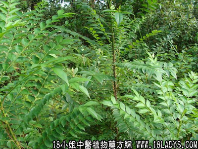

鹰不泊(中药材植物名:鹰不泊)(植物科目:芸香科)

别名：鹰不泊、乌不企、花椒根。
植物名：勒党。
生长环境：本品为乔木，山野或旱地有刺灌木丛中常见，或生于山脚、溪边。
分布：华南地区，以广州附近较多，此外热带亚洲亦有。
入药部分：根。
采集期：全年。
自采地点：山岗。
性味：性微凉、味苦。
功能：清热祛湿、利水消肿。
主治、用量和用法：1、阳黄：用干根1两至1两半，清水煎服；2、癍痧发热，配伍用；3、伤寒夹色，配伍用；4、百子痰水肿，配伍用。
验方1：（治百子痰水肿方）鹰不泊1两、白鹤藤1两、樟柳头1两、清水适量，煎取半量抹身，余一半放入痰盂内坐熏肛门。
（方解）樟柳头、白鹤藤长于泻水，鹰不泊行气解郁，助药运行，从大便排出，为外治水肿之法。
（方歌）水肿土名百子痰，鹰泊白鹤樟柳头，煎水热敷分半坐，熏肛便泄疾能好。
验方2：（治癍痧发热方）鹰不泊5钱、海金沙藤5钱、鸭脚树皮5钱、狮子滚球5钱、蛇泡簕5钱、清水五碗，煎成1碗半服。
（方解）鹰不泊、狮子滚球、蛇泡簕核清里热，配鸭脚树皮解表发汗；金沙藤利尿，组成为发汗利尿清热之剂，治外感传里化热甚验/
（方歌）癍痧发热热入焚，鹰不泊海金沙藤，狮子滚球蛇泡簕，鸭脚皮煎效入神。
参考资料：《广东中医锦方选集第一集》广州中医学院报导：鹰不泊一斤切碎，先用双蒸酒一斤蒸熟，再加入双蒸酒六斤，浸15天，每服一至2两，日二次，饭后服。治疗肾炎三例，均于服药后一月，尿量日增，全身头面浮肿消退，尿蛋白从三十减至十，红血球、血色素均有增加，肾功能有所改善，酚红试验接近正常，尿颗粒管型部分消失，出院能恢复劳动生产。